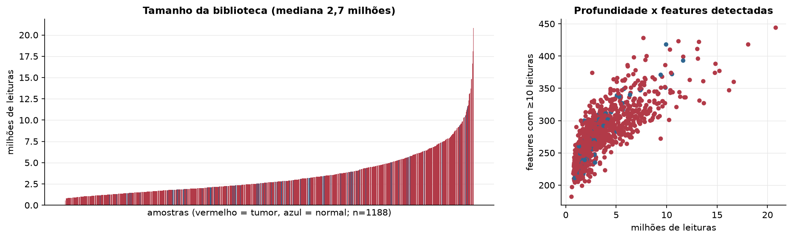
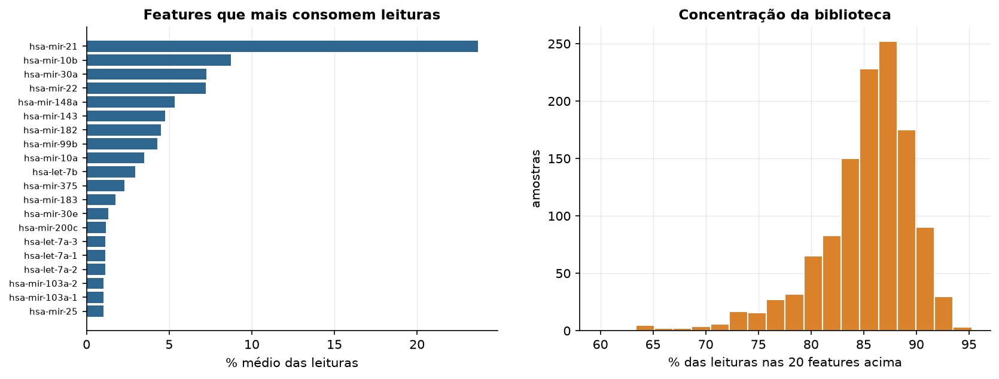
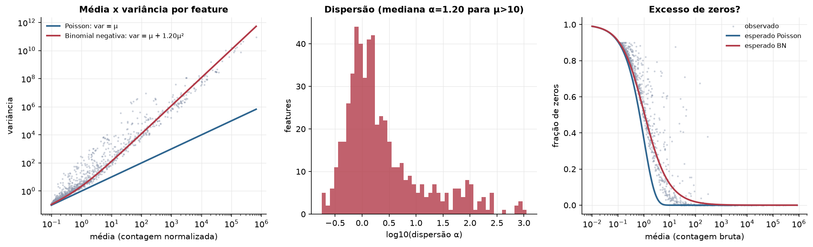
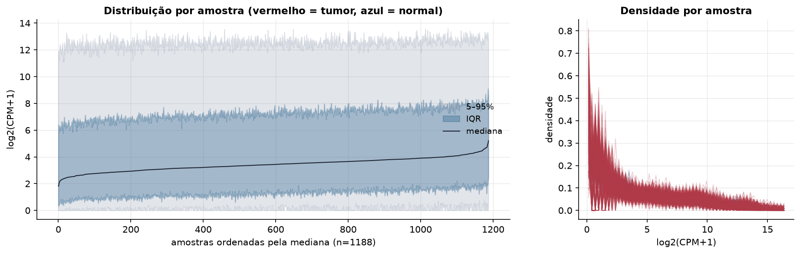
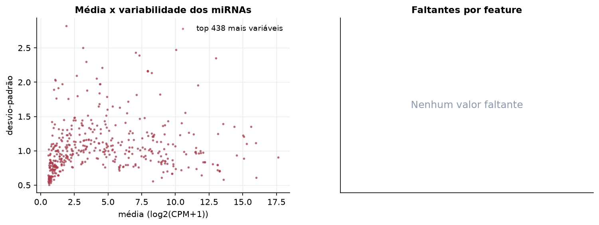
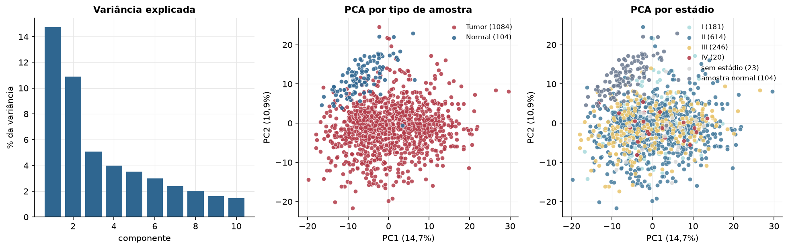
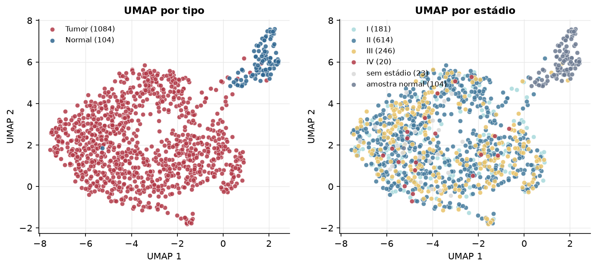
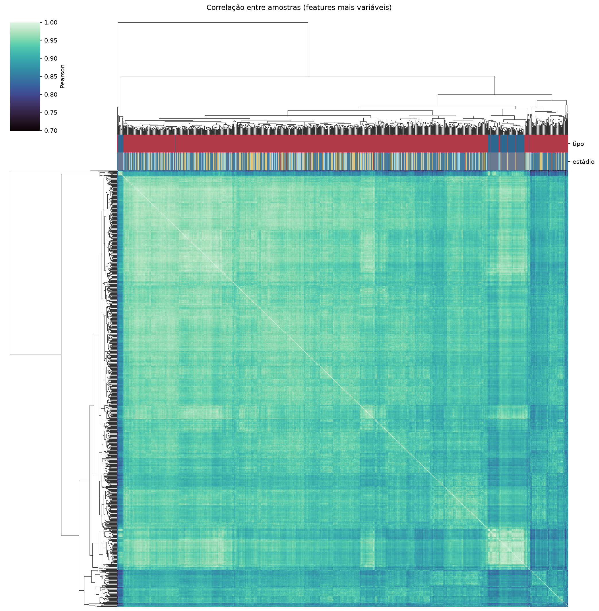
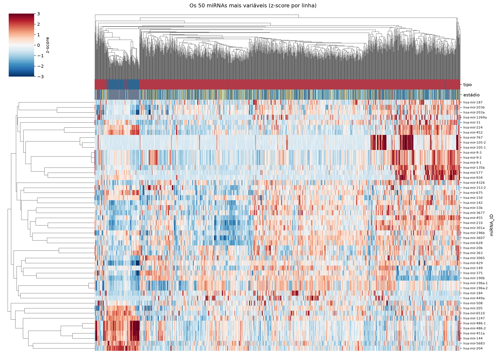
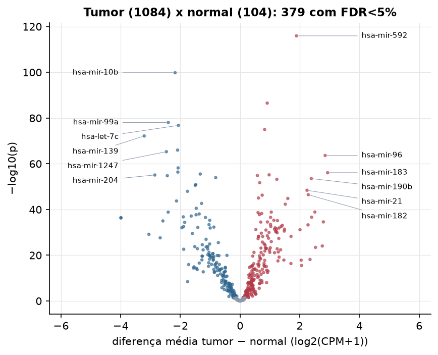

BRCA · miRNA-seq: contagens brutas (GDC)
BCGSC miRNA Profiling (miRBase v21) · gerado em 21/10/2026 19:17
2,7 Mtamanho mediano
1,20dispersão mediana α
438miRNAs
1.084amostras tumorais
104amostras normais
0,0%valores faltantes
Fonte: API do GDC (BCGSC miRNA Profiling)
Principais resultados
- Bibliotecas de 0,6 a 20,8 milhões de leituras (mediana 2,7). 975 de 1.881 features têm leitura em pelo menos 10% das amostras.
- A variância cresce bem acima da média: a dispersão mediana da binomial negativa é α=1.20 (para features com média > 10). Isso descarta um modelo Poisson e indica binomial negativa (ou Poisson-lognormal) na verossimilhança.
- A fração de zeros é compatível com a binomial negativa (diferença mediana -4,1%); inflação de zeros não parece necessária.
- Em média 86,1% das leituras de cada amostra vão para as 20 features mais abundantes.
- 438 miRNAs medidos em 1188 amostras (1084 tumorais e 104 normais); 0,0% dos valores estão faltando.
- Os dois primeiros componentes principais explicam 14,7% e 10,9% da variância das features mais variáveis.
- Correlação mediana entre amostras: 0,93.
- Amostras com correlação muito abaixo das demais (possíveis outliers técnicos): TCGA-A1-A0SK-01, TCGA-A7-A0D9-11, TCGA-AC-A2BK-01, TCGA-AC-A2QH-01, TCGA-BH-A0B5-11, TCGA-BH-A1FE-06, TCGA-GI-A2C8-11, TCGA-OL-A5D7-01.
- Tumor x normal: 379 miRNAs diferentes com FDR < 5% (203 maiores no tumor, 176 maiores no normal; 103 pacientes têm o par tumor-normal).
- Mais aumentados no tumor: hsa-mir-592, hsa-mir-4724, hsa-mir-7705, hsa-mir-96, hsa-mir-183, hsa-mir-301b, hsa-mir-4664, hsa-mir-190b.
- Mais reduzidos no tumor: hsa-mir-10b, hsa-mir-99a, hsa-let-7c, hsa-mir-139, hsa-mir-100, hsa-mir-1247, hsa-mir-125b-2, hsa-mir-125b-1.
- Associações clínicas com p < 0,05 nos componentes principais: PC2 com estádio (p=0.0099); PC3 com sexo (p=0.039); PC1 com idade (p=0.012); PC2 com idade (p=0.00011); PC3 com idade (p=0.011).
Biblioteca


Sobredispersão e zeros

Exploração em log2(CPM+1)
Features com CPM ≥ 1 em pelo menos 20% das amostras (438 features).
Distribuição dos valores


Estrutura das amostras




Tumor x normal

Features mais diferentes entre tumor e normal
| miRNA_ID | diferenca_tumor_menos_normal | t | p | fdr |
|---|---|---|---|---|
| hsa-mir-592 | 1.888 | 36.298 | 1.15e-116 | 5.02e-114 |
| hsa-mir-10b | -2.177 | -40.684 | 1.45e-100 | 3.17e-98 |
| hsa-mir-4724 | 0.909 | 22.554 | 2.99e-87 | 4.37e-85 |
| hsa-mir-99a | -2.406 | -32.61 | 8.88e-79 | 9.72e-77 |
| hsa-let-7c | -2.066 | -30.967 | 1.62e-77 | 1.42e-75 |
| hsa-mir-7705 | 0.825 | 25.058 | 1.07e-75 | 7.79e-74 |
| hsa-mir-139 | -3.211 | -36.802 | 6.87e-73 | 4.3e-71 |
| hsa-mir-100 | -2.093 | -28.694 | 1.06e-66 | 5.83e-65 |
| hsa-mir-1247 | -2.469 | -25.458 | 5.31e-66 | 2.58e-64 |
| hsa-mir-96 | 2.852 | 30.88 | 2.3e-64 | 1.01e-62 |
| hsa-mir-125b-2 | -2.075 | -26.57 | 6.5e-59 | 2.59e-57 |
| hsa-mir-125b-1 | -2.084 | -26.029 | 4.38e-57 | 1.6e-55 |
| hsa-mir-183 | 2.934 | 28.073 | 7.87e-57 | 2.65e-55 |
| hsa-mir-140 | -1.332 | -23.61 | 3.09e-56 | 9.67e-55 |
| hsa-mir-301b | 0.974 | 20.178 | 6.91e-56 | 2.02e-54 |
| hsa-mir-204 | -2.857 | -26.924 | 8.15e-56 | 2.23e-54 |
| hsa-mir-4664 | 0.581 | 18.185 | 1.4e-55 | 3.6e-54 |
| hsa-mir-145 | -2.438 | -26.861 | 1.61e-55 | 3.92e-54 |
| hsa-mir-28 | -0.816 | -22.284 | 1.11e-54 | 2.55e-53 |
| hsa-mir-190b | 2.387 | 22.193 | 2.99e-54 | 6.54e-53 |
| hsa-mir-449a | 1.233 | 16.923 | 6.45e-54 | 1.35e-52 |
| hsa-mir-4501 | 0.657 | 17.194 | 1.85e-52 | 3.68e-51 |
| hsa-mir-143 | -1.484 | -21.268 | 1.24e-51 | 2.37e-50 |
| hsa-mir-195 | -1.5 | -23.001 | 2.58e-51 | 4.7e-50 |
| hsa-mir-21 | 2.244 | 25.701 | 4.14e-49 | 7.25e-48 |
| hsa-mir-584 | -1.762 | -21.265 | 1.13e-48 | 1.9e-47 |
| hsa-mir-182 | 2.286 | 22.979 | 3.42e-47 | 5.55e-46 |
| hsa-mir-147b | 0.741 | 17.979 | 5.37e-47 | 8.4e-46 |
| hsa-mir-7-3 | 0.617 | 16.328 | 9.45e-46 | 1.43e-44 |
| hsa-mir-33b | 1.6 | 18.86 | 1.53e-45 | 2.23e-44 |
Associação com variáveis clínicas
p-valores da associação dos três primeiros componentes principais (só tumores) com estádio (Kruskal-Wallis), sexo (Mann-Whitney), idade (Spearman) e sobrevida global (Cox univariado).
| estádio (Kruskal) | sexo (Mann-Whitney) | idade (Spearman) | sobrevida OS (Cox) | |
|---|---|---|---|---|
| PC1 (15,1%) | 0.067 | 0.781 | 0.012 | 0.194 |
| PC2 (9,4%) | 0.01 | 0.383 | 0.000113 | 0.779 |
| PC3 (5,5%) | 0.712 | 0.039 | 0.011 | 0.659 |